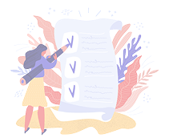

کوئرا لیست
سلام، رویا
امروز، سهشنبه، ۵ بهمن ۱۴۰۲
تسک های امروز
۳ تسک را باید انجام دهید.
جلسه با مدیران پروژه
بالا
جلسه با محسن یگانه و مریم جلالی
خرید میوه و سبزیجات و لبنیات برای خانه
متوسط
سوپرمارکت یاران دریایی
تماس با جمشید
پایین
باید در مورد کارهای باقیمانده از پروژه قبلی صحبت کنیم.

چه کارهایی امروز برای انجام داری؟
میتونی الان تسک هاتو اینجا بنویسی و برنامه ریزی رو شروع کنی!
تسک های انجام شده
۳ تسک انجام شده است.